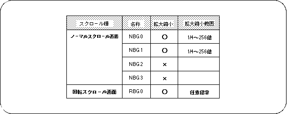
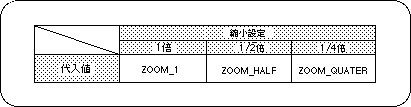

Return to previous page | Return to menu | Go to next page
Of the five scroll screens of SEGA Saturn, the scroll scroll screen “RBG0” and the normal scroll screen “NBG0, NBG1” can be scaled up and down with respect to scrolling. Of the three scroll surfaces that can be scaled, the rotating scroll screen “RBG0” can always be scaled at any magnification, but the normal scroll screen “NBG0, NBG1” has a range of 1/4 to 256 times. You can only zoom in and out.
Furthermore, the normal scroll screen has three modes for enlargement / reduction depending on the setting of the reduction range. This is called the reduction setting. Therefore, when using the normal scroll screen “NBG0, NBG1”, it is necessary to set the reduction setting. For details, refer to “HARDWARE MANUAL vol.2: VDP2 User Manual P129 to P130”.

Note) For NBG0,1, the range that can be reduced varies depending on the reduction setting.
Use the library function “slZoomModeNbg0,1” that corresponds to the normal scroll screen that performs the reduction setting to perform the reduction setting in SGL.

Note) The values in the above table are defined in “sl_def.h” included with the system.
The rotary scroll screen “RBG0” can always be scaled at any magnification, so there is no need to set the scale down.
Depending on the reduction setting of the normal scroll screen “NBG0, NBG1” (when it can be reduced to a smaller value), the number of scroll surfaces and functions that can be displayed may be limited. This is because the VRAM access count changes depending on the reduction setting. For details on access restrictions, refer to “HARDWARE MANUAL vol.2: VDP2 User's Manual”.